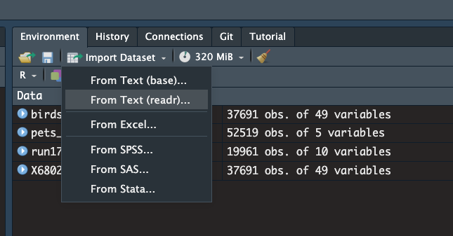
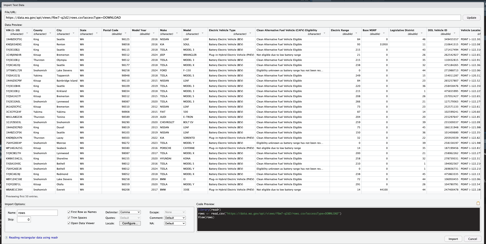
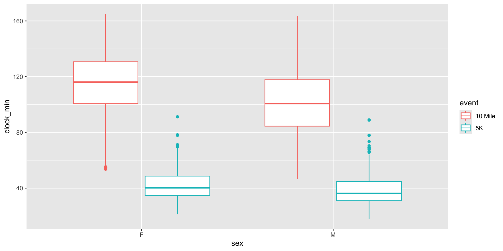

[1] ".GlobalEnv" "package:lubridate" "package:forcats"
[4] "package:stringr" "package:dplyr" "package:purrr"
[7] "package:readr" "package:tidyr" "package:tibble"
[10] "package:ggplot2" "package:tidyverse" "package:stats"
[13] "package:graphics" "package:grDevices" "package:utils"
[16] "package:datasets" "package:methods" "Autoloads"
[19] "package:base" Getting Started with R: Session 3
S. Kelly | Scholar Support and Data Services | Fall 2025
Load the tidyverse package to get started
Importing & Exporting Data
How do we get external data into RStudio? How do we export data from RStudio? The tidyverse package for importing and exporting is readr.

Importing Data with readr
Importing Data with readr
By default, the read_csv() function will import the first row as the column names.
Importing Data
You can also import data via the Environment pane (Import Dataset –> From Text (readr))
Other Import | Export Packages
For importing Excel, SAS, SPSS, and Stata files use the readxl and haven packages.
Importing directly from a url
Go to data.gov
Search for electric vehicles
Select the “Electric Vehicle Population Data” from Washington State
Don’t download, click on link for “Comma Separated Values File”
Right-click to copy the url to the file
Reading in the Data Directly
Quick Look
# A tibble: 6 × 17
`VIN (1-10)` County City State `Postal Code` `Model Year` Make Model
<chr> <chr> <chr> <chr> <dbl> <dbl> <chr> <chr>
1 JTDKN3DP2D Yakima Yakima WA 98902 2013 TOYO… PRIUS
2 1FMCU0E1XS Kitsap Port Orch… WA 98366 2025 FORD ESCA…
3 JM3KKBHA9R Kitsap Kingston WA 98346 2024 MAZDA CX-90
4 7SAYGDEE8P Thurston Olympia WA 98501 2023 TESLA MODE…
5 5YJ3E1EB5K Thurston Rainier WA 98576 2019 TESLA MODE…
6 5YJ3E1EA6K Snohomish Snohomish WA 98296 2019 TESLA MODE…
# ℹ 9 more variables: `Electric Vehicle Type` <chr>,
# `Clean Alternative Fuel Vehicle (CAFV) Eligibility` <chr>,
# `Electric Range` <dbl>, `Base MSRP` <dbl>, `Legislative District` <dbl>,
# `DOL Vehicle ID` <dbl>, `Vehicle Location` <chr>, `Electric Utility` <chr>,
# `2020 Census Tract` <chr>Rename
How do we get rid of the spaces in the variable names?
Exporting Data
Use the write_csv() function to export a comma-separated values file to your working directory.
Let’s export the ev object from the last slide as a csv file
Now check your working directory. Do you see it?
Data Manipulation with dplyr
ggplot2 is the most well-known package of the tidyverse suite, but dplyr might be the most useful. dplyr is how your subset and wrangle your data.

Most dplyr functions are action verbs
glimpse() # quick preview of variables
count() # count unique values of a variable
arrange() # sort your data
select() # grab particular variables
relocate() # reorder your variables
mutate() # create new variables
group_by() # group your data
summarize() # summary stats on grouped data
filter() # grab observations that meet criteria
slice_sample() # grab random observationsWorking with Variables
Last Week: cherryblossom package and run17 data

glimpse
Rows: 19,961
Columns: 9
$ bib <int> 6, 22, 16, 4, 20, 8, 18, 24, 44, 30, 38, 23051, 34, 640, 150…
$ name <chr> "Hiwot G.", "Buze D.", "Gladys K.", "Mamitu D.", "Karolina N…
$ sex <chr> "F", "F", "F", "F", "F", "F", "F", "F", "F", "F", "F", "F", …
$ age <int> 21, 22, 31, 33, 35, 33, 27, 21, 26, 26, 25, 28, 26, 22, 27, …
$ city <chr> "Ethiopia", "Ethiopia", "Kenya", "Ethiopia", "Poland", "Ethi…
$ net_sec <dbl> 3217, 3232, 3276, 3285, 3288, 3316, 3334, 3357, 3359, 3372, …
$ clock_sec <dbl> 3217, 3232, 3276, 3285, 3288, 3316, 3334, 3357, 3359, 3372, …
$ pace_sec <dbl> 321, 323, 327, 328, 328, 331, 333, 335, 335, 337, 344, 345, …
$ event <chr> "10 Mile", "10 Mile", "10 Mile", "10 Mile", "10 Mile", "10 M…count
Count the unique values of a variable
tidyverse pipe |>
Previous convention was the magrittr pipe: %>%
Current convention: |>
The both work the same way.
Mac Shortcut: Command + Shift + M
Windows Shortcut: Control + Shift + M
select
The select function is how you grab columns.
# A tibble: 19,961 × 1
city
<chr>
1 Ethiopia
2 Ethiopia
3 Kenya
4 Ethiopia
5 Poland
6 Ethiopia
7 Portland, OR
8 Kenya
9 Saratoga Springs, NY
10 Reston, VA
# ℹ 19,951 more rowsHow would you write that code above using the pipe?
Select is very versatile
# A tibble: 3 × 5
name sex age city event
<chr> <chr> <int> <chr> <chr>
1 Hiwot G. F 21 Ethiopia 10 Mile
2 Buze D. F 22 Ethiopia 10 Mile
3 Gladys K. F 31 Kenya 10 MileYou can also move your variables with select
# A tibble: 5 × 9
event pace_sec bib name sex age city net_sec clock_sec
<chr> <dbl> <int> <chr> <chr> <int> <chr> <dbl> <dbl>
1 10 Mile 321 6 Hiwot G. F 21 Ethiopia 3217 3217
2 10 Mile 323 22 Buze D. F 22 Ethiopia 3232 3232
3 10 Mile 327 16 Gladys K. F 31 Kenya 3276 3276
4 10 Mile 328 4 Mamitu D. F 33 Ethiopia 3285 3285
5 10 Mile 328 20 Karolina N. F 35 Poland 3288 3288Other handy features of select
What am I doing here?
# A tibble: 19,961 × 7
name sex age city net_sec pace_sec event
<chr> <chr> <int> <chr> <dbl> <dbl> <chr>
1 Hiwot G. F 21 Ethiopia 3217 321 10 Mile
2 Buze D. F 22 Ethiopia 3232 323 10 Mile
3 Gladys K. F 31 Kenya 3276 327 10 Mile
4 Mamitu D. F 33 Ethiopia 3285 328 10 Mile
5 Karolina N. F 35 Poland 3288 328 10 Mile
6 Firehiwot D. F 33 Ethiopia 3316 331 10 Mile
7 Tara W. F 27 Portland, OR 3334 333 10 Mile
8 Nancy N. F 21 Kenya 3357 335 10 Mile
9 Hannah D. F 26 Saratoga Springs, NY 3359 335 10 Mile
10 Susanna S. F 26 Reston, VA 3372 337 10 Mile
# ℹ 19,951 more rowsActivity: Can you select all columns except the bib column?
Activity Check
# A tibble: 19,961 × 8
name sex age city net_sec clock_sec pace_sec event
<chr> <chr> <int> <chr> <dbl> <dbl> <dbl> <chr>
1 Hiwot G. F 21 Ethiopia 3217 3217 321 10 M…
2 Buze D. F 22 Ethiopia 3232 3232 323 10 M…
3 Gladys K. F 31 Kenya 3276 3276 327 10 M…
4 Mamitu D. F 33 Ethiopia 3285 3285 328 10 M…
5 Karolina N. F 35 Poland 3288 3288 328 10 M…
6 Firehiwot D. F 33 Ethiopia 3316 3316 331 10 M…
7 Tara W. F 27 Portland, OR 3334 3334 333 10 M…
8 Nancy N. F 21 Kenya 3357 3357 335 10 M…
9 Hannah D. F 26 Saratoga Springs, … 3359 3359 335 10 M…
10 Susanna S. F 26 Reston, VA 3372 3372 337 10 M…
# ℹ 19,951 more rowsmutate
Mutate creates new variables based on variables you already have in the dataframe
We have time to complete race in seconds. We want minutes.
How can we create that?
mutate and select
You can combine dplyr and ggplot2 functions
Working with Rows
Logical Comparisons & Boolean Operators in R
Review these comparisons
filter
# A tibble: 10 × 9
bib name sex age city net_sec clock_sec pace_sec event
<int> <chr> <chr> <int> <chr> <dbl> <dbl> <dbl> <chr>
1 266 Lisa G. F 33 Washington, … 1275 1275 409 5K
2 6606 Jennifer P. F 33 Alexandria, … 1296 1296 416 5K
3 23060 Christina M. F 52 Severna Park… 1309 1309 420 5K
4 316 Lisa C. F 46 North Bethes… 1319 1320 424 5K
5 23517 Meghan Z. F 28 Chappaqua, NY 1372 1374 441 5K
6 3239 Pamela D. F 33 Washington, … 1402 1405 450 5K
7 21787 Kelly M. F 32 Washington, … 1411 1418 453 5K
8 23952 Brisa B. F 23 Washington, … 1414 1439 454 5K
9 24928 Lindsay T. F 30 Arlington, VA 1424 1424 457 5K
10 2890 Darcy J. F 32 Alexandria, … 1432 1477 460 5K Let’s filter even more…
# A tibble: 10 × 9
bib name sex age city net_sec clock_sec pace_sec event
<int> <chr> <chr> <int> <chr> <dbl> <dbl> <dbl> <chr>
1 23731 Iber G. M 29 New York, NY 1078 1078 346 5K
2 24018 Jared D. M 21 Cherry Hill,… 1093 1095 351 5K
3 24234 John M. M 24 Washington, … 1117 1117 359 5K
4 23531 Offir G. M 29 New York, NY 1163 1164 373 5K
5 24794 James S. M 31 Enfield, NH 1165 1166 374 5K
6 1109 Mark T. M 28 Montreal, QC 1177 1177 378 5K
7 1401 Andrew L. M 32 Washington, … 1183 1183 380 5K
8 23944 Chris C. M 27 Norwood, MA 1186 1186 381 5K
9 624 Zach O. M 25 Arlington, VA 1188 1188 381 5K
10 21760 Sebastien G. M 40 Arlington, VA 1259 1259 404 5K Final Activity
Filter the run17 dataset to only men over 40 who ran the 10 mile race
Activity Check
# A tibble: 2,959 × 9
bib name sex age city net_sec clock_sec pace_sec event
<int> <chr> <chr> <int> <chr> <dbl> <dbl> <dbl> <chr>
1 129 David W. M 41 Arlington, VA 3196 3198 319 10 M…
2 127 Philippe R. M 44 Mclean, VA 3218 3220 321 10 M…
3 23050 Matthew W. M 40 Ogden, UT 3399 3406 339 10 M…
4 145 Knox R. M 42 Brooklyn, NY 3402 3403 340 10 M…
5 597 Shane S. M 45 Viera, FL 3442 3448 344 10 M…
6 147 David O. M 40 Alexandria, … 3447 3449 344 10 M…
7 152 Noah Z. M 45 Washington, … 3450 3453 345 10 M…
8 620 Brian H. M 40 Silver Sprin… 3500 3513 350 10 M…
9 166 Martin L. M 43 Bethesda, MD 3528 3530 352 10 M…
10 168 Alexander H. M 49 Vienna, VA 3548 3554 354 10 M…
# ℹ 2,949 more rowsNext Week
We’ll add more plotting from ggplot2 and additional functions from dplyr

S.Kelly | Getting Started with R | Fall 2025